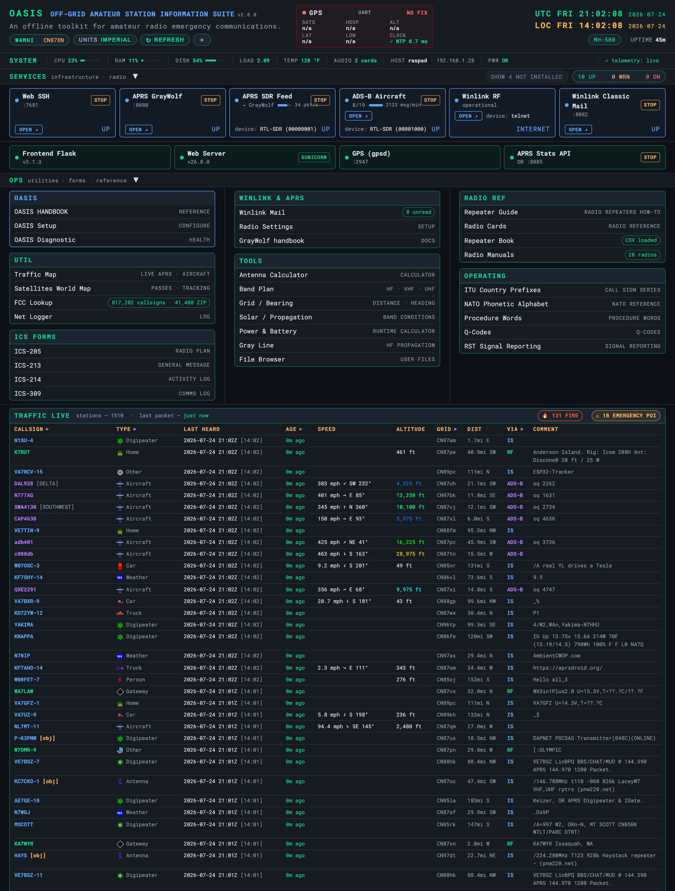

OASIS Handbook
Off-grid Amateur Station Information Suite — comms when the network’s gone dark

OASIS turns a Raspberry Pi — or any laptop — into a self-contained emergency-communications station that every phone, tablet, and laptop on a local network can use through a web browser, with no internet, no cloud account, and nothing to install on the client. When the grid is up it’s a convenient ham-radio toolkit; when the grid is down — the moment it was built for — it keeps working exactly the same.
This handbook is the operator’s guide to the whole suite: how to build and deploy it, what every dashboard card and tool does, and how to run a field station. It assumes you hold an amateur licence and know the hobby — it is a tool for operators, not an introduction to radio.
Offline-first, not offline-capable
The distinction is the whole point. Offline-capable software works online and degrades when the network drops. Offline-first assumes there is no network, ships every byte it needs locally, and treats internet access as a rare convenience for refreshing data — never a runtime dependency. At runtime OASIS fetches nothing: no CDN, no API, no font, no map tile. Even installing it can happen with no internet, from a vendored USB bundle.
What’s in the suite
| Capability | What you get offline |
|---|---|
| Emergency forms | ICS 205 / 213 / 214 / 309 on official FEMA PDF templates |
| FCC callsign lookup | Sub-millisecond search over a local copy of the FCC amateur database |
| Offline maps | OpenStreetMap vector tiles via MapLibre GL + PMTiles, served from the host |
| APRS Pi | GrayWolf TNC / iGate / digipeater with a live station map and messaging |
| Winlink Pi | Pat client + web UI for store-and-forward radio email |
| Tools & calculators | Antenna, grid, power/battery, gray-line, band conditions, net logger |
| Reference library | Band plan, Q-codes, phonetics, prowords, RST, ITU prefixes, cheat-sheets |
| Offline Wikipedia Pi | Kiwix serving a ZIM snapshot |
| Web SSH Pi | A browser terminal (ttyd) with no separate SSH client |
How it’s served
A single small Flask app serves the dashboard, the FCC lookup
API, and the map tiles. Everything heavy — forms, calculators, reference —
is static HTML running in the browser against localStorage, so the
server never holds browser state. Companion services run as their own processes
and the dashboard discovers them at runtime, so a missing service just greys out
a card instead of breaking the page.
| Port | Service |
|---|---|
8083 | OASIS — dashboard, FCC lookup, map tile server |
8085 | APRS history API (feeds the dashboard map) |
8080 | GrayWolf APRS optional, Pi |
8082 | Pat Winlink web UI optional, Pi |
8081 | Kiwix offline Wikipedia optional, Pi |
7681 | webssh / ttyd browser terminal optional, Pi |
New here? Jump to Quick Start to build the offline USB bundle and stand up a Pi, then Accessing OASIS to reach the dashboard from your phone.